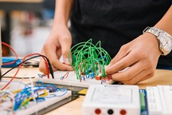
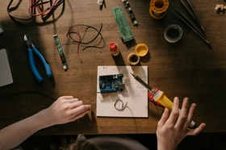
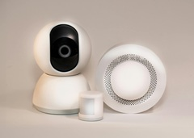
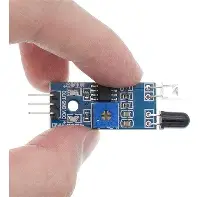
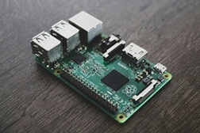
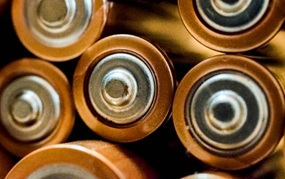

Nuestro proyecto va en base en disminuir los accidentes en carretera por los microsueños, fatiga o somnoliencia. Aqui estan los materiales con los que lo hicimos
| # | Material | Descripción | Imagen |
|---|---|---|---|
| 1 | Cables | Conectan los componentes y permiten el flujo de energía |  |
| 2 | Arduino | El cerebro del proyecto, controla todo el sistema |  |
| 3 | Sensor de movimiento | Detecta presencia y activa respuestas automáticas |  |
| 4 | Sensor infrarrojo | Detecta señales invisibles al ojo humano |  |
| 5 | Resistencias | Regulan el paso de corriente y protegen los componentes |  |
| 6 | Pila | Fuente de energía portátil para alimentar el circuito |  |